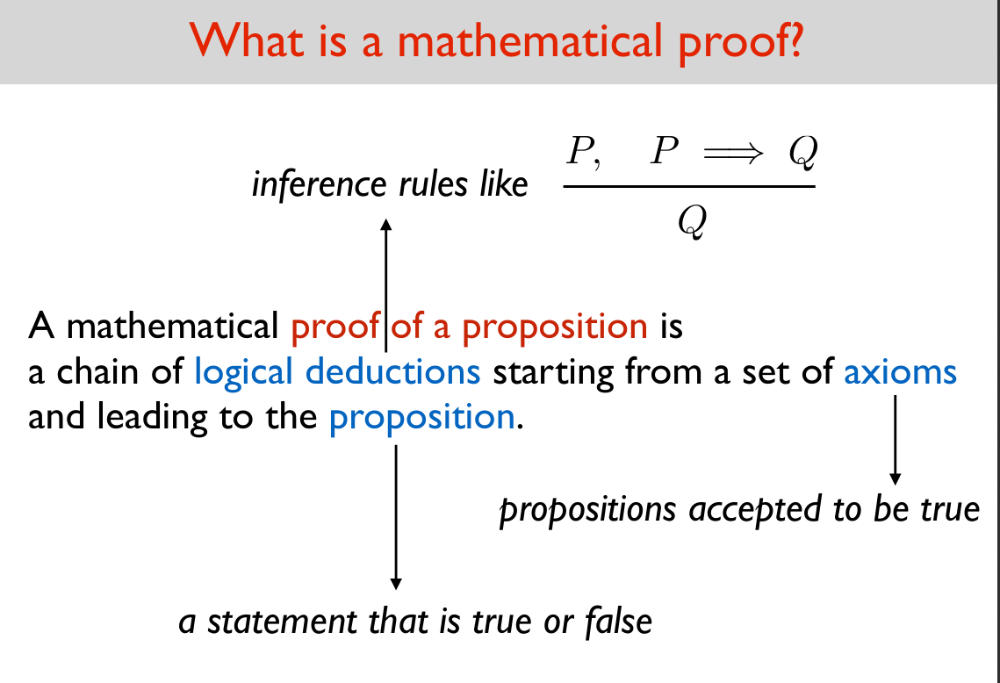
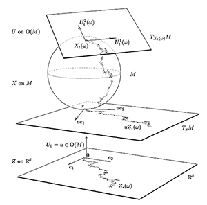
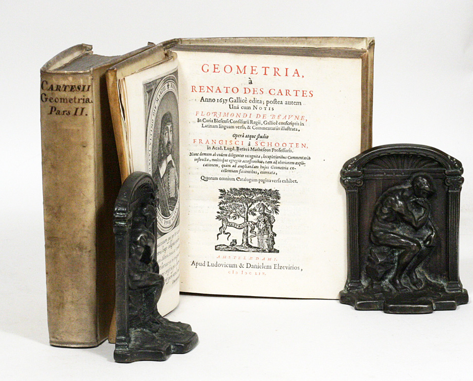
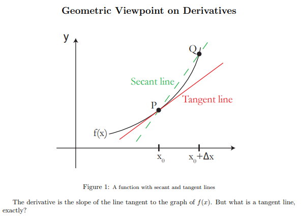
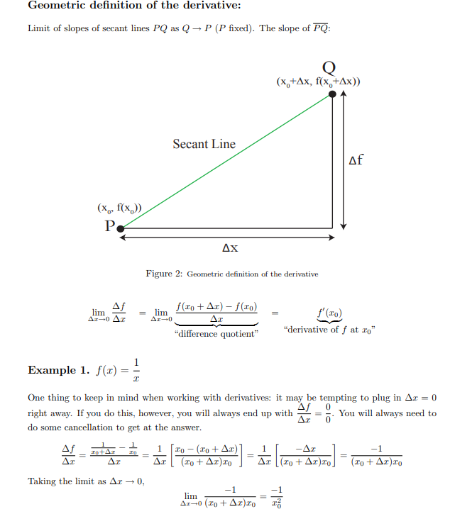

21st Century Undergrad Mathematics
Intro
I assembled experimental material for the 21st century such as the Lean proof assistant to learn mathematical logic, linear algebra without free/pivot variables or echelon forms or defining the SVD using eigenvalues. The Riemann integral was replaced 100+ years ago too but still taught in undergrad so we'll see some 'modern' integrals.
We'll also learn some 21st century math like Univalent foundations which has enabled an explosion in research because you can apply univalence to many different objects to ensure interchangeability in all contexts. There is a ton of research happening right now at the Topos Institute in Category Theory so we will learn what's going on there too.
tl;dr we will learn
- Proof/logic formalization
- Proof strategies
- Modernized single variable, vector and matrix calculus
- Homotopy Type Theory/Univalence axiom
- which means we have to learn category theory
- which also means we have to learn some abstract algebra/topology
In undergrad course parlance this translates to an 'Intro to Proofs' course, Calc I and II, Analysis I, Linear Algebra, a Putnam seminar and a grad seminar in category/type theory.
This is not a linear curriculum, I expect you do it calling into work sick for a week or being bored one weekend. We are reviewing these subjects enough so you can teach yourself in-depth whatever you are interested in. Then of course that becomes a life-long learning mission but how do you know what mission to take before you see all the battle plans? My advice is learn all the critical parts just enough to be fluent in whatever you are interested in doing and then go after that with your time.
Do 1% effort for 100 days - Prof Ryan O'Donnell
Insight to math crash course
The following is every insight I picked up doing this material that often wasn't immediately obvious or explained.
Notation
Constants are usually represented by a, b, c or the beginning of the alphabet and variables represented by x, y, z or the end of the alphabet. Greek letters typically represent real numbers (constants) which are decimal numbers that don't seem to terminate such as pi, phi, Euler's constant gamma, etc. Functions that don't need a permanent name are usually f, g, h and sometimes functions are Greek letters. These conventions go back to Descartes.
Data Structures
Math has data structures just like programming languages. A tuple is an ordered sequence/list (a, b) or n-tuple (a, b, c..) and there's unordered sets like Y = {1 2 3} and partially ordered sets like a binary relation. A vector is a tuple, and functions are defined as mappings between sets. A matrix is an array. Learning all the operations/rules of these data structures is trivial and you can freely cast things to new data structures if you wanted.
Mathematical reasoning

The model for basically all mathematical reasoning:
- AND \(\land\) (conjunction)
- OR \(\lor\) (disjunction)
- NOT \(\neg\)
- Implies A \(\implies\) B
- only false when A is true and B is false
- Iff (if and only if) A \(\iff\) B
These connectives can of course be used to define each other:
- A \(\implies\) B is \(\neg\) A \(\lor\) B
- implication is only true when either A is false OR B is true
- Iff is (A \(\implies\) B) \(\land\) (B \(\implies\) A)
Equality
Axioms of equality:
- Axiom 1: Given any object, it should be equal to itself (reflexive property).
- Axiom 2: Given any two objects x and y of the same type if x = y then y = x (symmetric property)
- Axiom 3: Given any three objects x, y, and z of the same type if x = y and y = z then x = z (transitive property)
- Axiom 4: Given any objects of the same type, if x = y then both are interchangable in all functions/operations. Any property that depends on x, if x = y then property(x) and property(y) are equivalent too (substitution)
What are Functions
An ancient concept of a function is written on a papyrus from 1850 BC describing the rule for finding the area of a rectangle using the product of two adjacent sides. Today we would say the area of a rectangle is a function of it's two adjacent sides or more generally when you multiply numbers together the final product is a function of its factors. Any kind of relationship/dependency can be modeled as a function so long as it maps to a single output.
Similar to programming, math functions can take functions as input and return new functions, that's exactly what derivatives in calculus do.
What is Linearity
In math linear means one thing changes at the same rate as another so the relation between them doesn't change. Linear equations or relations have the form of a straight line when graphed hence why line is in the name linear. Almost everything you learn in first year mathematics is some kind of linear approximation to a more complex object because you want to approximate everything in the simple world of linearity then can use all the tools we have developed for linear functions like Euler's method for approximating differential equations so they can be analyzed.
What are Polynomials
A monomial is anything in the form axn where a is some constant (a number), and x is a variable meaning you substitute in values for x which can be a function, another monomial, or an integer. Notice if the exponent n = 0 then we have ax0 which evalutes to a(1) or a constant so any single constant is also a monomial and if x = 0 then axn is a0n or 0 so 0 is also a monomial due to the substitution axiom of equality.
You can string these together to form polynomials. The general form of polynomials where an are negative or positive coefficients:
\[f(x) = a_{n}x^n + a_{n-1}x^{n-1} + ... + a_{1}x + a_0\]
The subscripts are an indexing scheme like how you would identify cells in an array. A polynomial p(x) is a specification, or a model/approximation of another function f(x) for the purposes of getting all its statistics such as which x is f(x) = 0? What value of x is the max/min of f(x)? What is the shape of its graph y = f(x)? If you divide two polynomial functions the result is a function that generates rational numbers.
What are Matrices
A matrix is a linear mapping so it too encodes or specifies a function. The purpose of linear algebra in highschool is to solve 'systems of linear equations' where in university it's to study linear transformations. A linear transformation example is a rotation of a 2D square. Input (x, y) coords as a vector to a rotation matrix and it returns it's rotated coords. In practice most transformations are non-linear but can be approximated with linear transformations.
The notation Ax = b means A is a matrix, x is a vector and b is the vector output. A matrix multiplied by a vector is like giving it an input. If you multiply two matrices it's just function composition. When you encode a function as a matrix you can also get it's statistics using the SVD or Singular value decomposition which factors it down to individual parts/spaces for example Nullspace is the zeros of the function and Column space is the range of the function.
A vector we'll learn later is an abstract object. In calculus courses they are usually represented by arrows in the 2D (x, y) or 3D (x,y,z) plane however the definition is so abstract a vector can also be a function or infinite sequence then the arrow representation makes no sense.
What is Algebra
Modern algebra was invented to figure out Islamic inheritance law where debt had to be paid out and assets distributed according to some complex formula. It was a method of 'balancing and restoring' so you could do a scalar multiplication to both sides of an equation or subtract/add to each side to cancel any kind of negative values since they had no method of dealing with negative numbers back then.
You can learn ancient Greek algebra by reading Diophantus' Arithmetica and there is even classical curriculum for this.
An algebra seems to me to just mean computation is possible, think simple gates in a circuit doing T or F booleans and presto you have computation or an algebra. An 'algebraic type' is a sum or product type meaning a type that was formed by combining other types. A list is an algebraic type it's type is empty plus a link. According to Robert Harper a dynamically typed language has a single sum type which is every type combined.
What are Derivatives
They are another linear approximation. When you take a derivative of a function it's a higher-order procedure that gives you a new function representing it's rate of change. Interpreting this derivative or rate of change function depends what your context is, if it's time mapped to position the derivative is the velocity. To find the derivative of a curve you zoom in on a local fixed point until it appears to be a straight line just like how you walk the round earth but everything seems flat from your zoomed perspective.
In economics it has a similar interpretation. It's the rate of change while increasing production by a 'marginal unit'. The paper I linked notices the failure of students to transfer knowledge meaning you're supposed to recognize a concept in one context (elementary calc) and can apply it to another context in economics but of course their curriculum never works as you just get a cook book of cherry picked problems with recipes to solve them and students are naturally confused.
What is Integration
Integration is the undo function of taking a derivative called the anti-derivative. On YouTube they will tell you it's some approximation of an area using Riemann sums because modern universities think students are too stupid to learn the Lebesgue integral that replaced it in 1904 so you are forced to learn 'improper integrals' and other nonsense. You integrate a function meaning put it back together which was derived (the derivative) from another function.
Music and math
The ancients considered architecture to be frozen music and music singing the architecture. They would take the porportions of elaborate domes and fictional geometry of celestial temples and write them into a rhythmic pattern called a talea then like the higher-order function map over the melody applying this talea in different measures creating a rich sound that did not exist during the time. For a few hundred years we mainly had chanting which became very advanced polyphony in the 1400s like this song where you can hear the map.
Pythagoreans and Plato claimed that music itself is nothing but auditory perception of numbers and if you try learning music notation after learning math notation what do you think are they right?
Math difficulty
I have never taught this subject (elementary real analysis) without a few "weepers." These are students who have always been convinced that they are "good at mathematics." They aced the calculus courses, and yet are overwhelmed at the elementary real analysis level. They can understand everything in class (they claim) but simply cannot write a correct proof for even the most trivial limit theorems of the course. They have miserably failed the first midterm, something that they couldn't conceive would happen to them ever.
Why is analysis so difficult? They aren't much amused when I tell them that this material was routinely taught in the former Soviet Union to 15 year olds.
Early study of any subject may not prepare you for the next level. Real analysis courses are very subtle (not difficult really) and demand greater insight and thought than the computational courses that precede them.
Learning a new subject does not always create challenges, but you should be aware that at some time in your life you will certainly encounter a new subject that overwhelms you at first. Perhaps the most important skill you can learn is how to dig yourself out of trouble when a subject bites you hard. You will have to do it eventually.
For high school students, if this happens in the first weeks of college—well enjoy the experience and learn the necessary study skills. You will need them again. For math students–don't get too smug. At some point in your life you will have to work very hard to get to the next level.
We will always find ourselves at some point in our life "unprepared" for the next level of study. Consider it a question of character as to whether you can salvage yourself
Quote from Prof Brian S Thomson the author of the integration theory book we'll do. If you know how to program then most math abstractions will be easy for you to understand because it's all the same thing. There is a correspondence between logic, math and programming where a theorem in math is a specification of a program, and the program written to that spec is a proof. When you run the program you are simplifying the proof. The lambda calculus by Church and natural deduction logic (proof theory) by Gentzen both developed in the 1930s is the same thing.
What is Geometry

Geometry is way of doing math, not a separate math subject. Think of it as an interpretation of math into visuals you can manipulate using logic. We will try some of it later but it's optional.
Isaac Newton and Geometry
I did some research on how Isaac Newton learned math, if you're curious expand detials.
For geometry-themed entertainment try Isaac Newton on Mathematical Certainty and Method by Niccolo Guicciardini.
Isaac Newton entered Trinity College in 1661 for a law degree as a sub-sizar meaning subsidized tuition in exchange for being a domestic servant. Cambridge then was just a diploma mill there were seldom any lectures, the oral exams at the end of your degree basically optional and fellows (graduate students) took jobs as tutors to supplement their income. Undergrad degrees consisted of one of these tutors giving you a list of books to read. According to his Trinity College notebook which Cambridge still has, this curriculum was a large reading list of classics such as Du Val's four volume collected works of Aristotle like Organon and Metaphysics, Porphyry's Isagoge, Vossius's Rhetoric, Diogenes Laertius, Epicurus, Plato, and many Roman poets like Ovid. This was because of the recovery of Aristotle in the middle ages which shaped 'philosophy of natural sciences' courses for the next few centuries. There didn't exist titles like mathematician, practitioners then considered themselves philosophers. Newton soon stopped taking notes of his official curriculum, and must have read Walter Charleton’s Physiologia because he wrote down 37 headings on different pages that were questions to be answered investigating natural science topics, 18 of which came from Charleton's book and some from Aristotle. These were 'Of Atoms, Of a Vacuum, Of Vision' and many others. He gave each topic different sized gaps indicating how much he thought he needed to write about each. Everytime he would learn something about them he'd write notes under the heading like a comet position he once tracked.
According to Newton's notebook, and the writings of his close friend De Moivre, here is how Newton learned mathematics. Wandering the town fair in 1663 he comes across a book on astrology, and out of curiosity buys a copy. There's a figure he couldn't understand in the book because he didn't know trigonometry. He buys a book on trigonometry but couldn't understand the demonstrations because of a lack of geometry. At Cambridge he goes to the math department and everyone there is deeply immersed in the work of La Geometrie by Descartes. They tell him to buy Barrow's Euclid Elementorum an easier version of Euclid's Elements. He skims it and after finding what he needs for the astrology/trig book abandons the book as 'too trivial' (later has to go back and relearn classic geometry).
He returns to the math department and is given Oughtred's Clavis mathematicae or the key to mathematics writing he understands it except for the solutions of quadratic and cubic equations however his takeaway in his notes is that algebra can be used for exploration, which he starts doing by writing out hundreds of examples.

Again he returns to the math department to ask for a new book, and they are all still immersed in Cartesian geometry so Newton, despite being told it was a very difficult book, borrows a 1659 two volume Latin translation of Descartes La Geometrie by van Schooten called Geometria, a Renato des Cartes with appendices and commentary by his students. This book was considered the state of the art of 17th century analytical geometry, it would be like reading a graduate text today by a leading expert that had an appendix full of lecture notes and PhD student dissertations.
This is the algorithm Newton used to read van Schooten's two volume book. He read a few pages or so, couldn't understand the text, and went back to the beginning. Went a little further then stopped again going back to the beginning. He repeats this loop by himself until he finally 'makes himself whole of Descartes'. Looking at the online copy of this 1659 version the Descartes geometry is about 104 pages and 450 or so pages of additional research/commentary. It is broken up into 3 parts and assuming he didn't have to reread each part everytime he looped, only the relevant part (~34 pages), it probably took him 3 months to finish van Schooten which is what his notebook shows that after a few months he was already doing research in analytical geometry trying to generalize Descartes. His notebook indicates he learned from the grad student commentaries how to transform a hard problem into a different simpler one.
Newton's notes which you can read online show him trying to generalize any math he read which often would lead him into algebraic corners where he would get stuck as there didn't exist at the time methods to solve/simplify. He seemed to assume everything he read was a special case of something more general such as the insight that integration is the reverse operation of differentiation so there must only be a theory of derivatives somewhere waiting to be discovered.
After Descartes he returned the borrowed copy and bought a different copy of Descartes for himself, and van Schooten's Exercitationes mathematicae libri quinque or Five Books of Mathematical Exercises to help him fill in the blanks of his algebra misunderstandings as he had a lot of mistakes in his notebooks regarding negative roots. Newton assumed the cubic parabola was the same shape in all quandrants but soon after corrected these mistakes. Descartes geometry wasn't like today's Cartesian plane it originally consisted of just one positive quandrant but van Schooten and his students had expanded it.
Descartes' La Geometrie is filled with little comments of encouragement as he was afraid nobody would read his work if it was too long so everywhere there is these reassurences like 'don't worry reader the following isn't too hard' or insisting the reader figure out everything to not deny them of the satisfaction of figuring out the geometry thesmselves. The different copy Newton buys has all these comments left in tact and Newton misunderstands one of these comments by Descartes about the equation of curves stating it is easy to find everything you want to know about a curve from it's equation and the reader need not be bothered by a lengthy demonstration when in fact this is an unsolved problem. Newton breaks down the equation of a curve into many headings in his notebook and tries to generalize creating his own advanced analysis well beyond any other mathematician at the time.
In the winter of 1664 he reads Arithmetica Infinitorum by Wallis which is the arithmetic of infintesimals. Newton recognizes many of the sums are similar to what he read in Oughtred's book, known today as Pascal's triangle and in typical fashion seeks to generalize and invents the binomial theorem. Newton then reads Viete's Opera Mathematica which was another textbook by van Schooten compiling all the work of Viete such as Diophantine equations. In less than a full year Newton managed to bring himself up to date with the entire achievement of mid 17th century mathematics by himself and begins self-directed research writing out 22 headlines of 'problems' in his notebook and classifying them into groups regarding integration, analytic geometry and mechanics.
The plague shuts down the school from the summer of 1665 to spring of 1667 and Newton returns home, makes himself an office by building bookshelves for his now large library and spends all his time doing research with his new analytical tools building them into calculus. Describing his activities during the second plague year: "I am ashamed to tell to how many places I carried these computations, having no other business at the time, for then I took really too much delight in these inventions". There is notes he kept of calculating a logarithm to it's 52nd decimal point. This is basically the end of story for Newton's analysis research, sometime during the pandemic years he is satisfied with his calculus and abandons research in math to pursue his other questions in his notebook. There is a lot of notes about how tedious it was to do calculations before he came up with his analysis so we can assume he became satisfied that he had all he needed.
Newton believed the ancients had already figured everything out, and this information was lost over time after living during the plague, the great fire of London and political upheaval. He believed their knowledge was encoded in myths written in Roman and Greek literature. He believed every myth was real but that their lives were embellished through story telling. A common alchemist practice for example was to interpret Ovid's Metamorphoses where the god of the forge/metalwork Vulcan catches his wife Venus and Mars locked in an embrace so traps them in a fine metallic net. The alchemists of the Royal Society that Newton belonged to frequently used the names of planets for metals so obtaining an alchemists manuscript by George Starkey he recreated this myth and ended up with an alloy with a strided net like surface. Newton also decoded Cadmus and the founding of Thebes from Ovid into practical lab instructions.
20 years later he is offered to write the Principia, and wanting to prove his infintesimal calculus he tries uncovering the ancient analysis used in classical geometry. Pappus' book 7 contains a commentary about a lost group of tools and propositions that Euclid, Apollonius, Eratosthenes and other geometers of the day used that Pappus referred to as the 'treasury of analysis'. These lost Porisms (corollaries) are speculated by Newton to be projective geometry.
Newton in his Lucasian chair lectures said that the ancients would never bother to introduce the algebra of curves with geometry because you lose the simplicity of working within geometry as its whole point was to escape the tediousness of calculations by simply drawing lines and circles. He also claims books like Pappus's Collectio deliberately hid the analysis, as it was considered an inelegant tool, and that ancient synthesis where they deduced a consequence from a given premise (a corollary) using visual means was a superior method as the analysis could not be reversed in steps like geometric synthesis could. He went further and claimed if you wanted to discover seemingly unrelated corollaries you had to use synthesis, describing the analysis of his day as a 'tedious pile of probabilities used by bunglers'. People today claim he did this to avoid priority disputes over his analysis he kept hidden except for privately circulated manuscripts over 20 years prior, but the geometry he used invented limits and plane transformations that were not formally developed until 200 years later so he was probably right. His limits in geometry is very similar to what everyone today is using in modern calculus courses.
He later wrote in a manuscript on geometry that mechanics of motion was what generated all geometry and that the ancients had understood this as well conceiving geometrical objects as generated by moving along a straight edge, circles/elipses via the movement of a compass, or via translation like in Proposition 4 of Book 1 of Euclid's Elements where one triangle form is moved to compare to another. This is where he demonstrated that rotation of rulers were in fact transformation of the plane. Here is how Newton used his rotating ruler to create a power series.
"Comparing today the texts of Newton with the comments of his successors, it is striking how Newton’s original presentation is more modern, more understandable and richer in ideas than the translation due to commentators of his geometrical ideas into the formal language of the calculus of Leibnitz" -Vladimir Arnold 1990
Basics
If you completely forgot all highschool math we will review it here. Alternatively you could also try Herb Gross' Arithmetic course the book and study guide is linked in the video descriptions on google drive. You could also get the Art of Problem Solving Vol 1: The Basics.
We will rigorously learn algebra/analysis later so you just need the absolute basics to start.
Arithmetic with natural numbers
- YouTube - Arithmetic and Geometry Math Foundations 2
The successor function s(n) = n + 1 for natural numbers:
- s(0) = 1
- s(s(0)) = 2
- s(s(s(0))) = 3
Let's prove the laws of multiplication using his definitions
Prove n * 1 = n
The definition of multiplication: mn is n + n repeated m times so n1 is 1 + 1 repeated n times so 11 + 12 + … + 1n = n
We will need this result for the other proofs.
Prove the distributive law: (k + n)m = km + nm
km is m + m repeated k times or m1 + … + mk and (k + n)m means m + m repeated (k + n) times. Distributing m in (k + n)m we get: ((m1 + m +…mk) + (m1 + m +…mn)) and now the left side matches the right side since km + nm is the same when expanded.
Prove the associative law: (kn)m = k(nm)
(kn)m is m + m repeated kn times and kn is n + n repeated k times:
(n1 + … + nk)m or (mn1 + … + mnk) using distributive law.
Right hand side: k(nm) is nm + nm repeated k times (nm1 + … + nmk) and factor out m, both sides of the equation are the same since we haven't proven the commutative law yet so can't claim nm sequence is the same as mn sequence.
Prove the commutative law: nm = mn
First let's prove n1 = 1n or 1n = n. We proved n1 = n already, so we can use substitution to replace n in 1n.
1n is 1(11 + .. + 1n) and using the distributive law this is (11 + .. + 1n) or n. So now we have n1 = 1n.
Looking at the right side: mn is (n1 + … + nm)
Factor out n: n(11 + .. + 1m) and a sum of 1's up to m is m, so we have nm = nm.
Laws of Subtraction
- YouTube - Arithmetic and Geometry Math Foundations 4
The Hindu-Arabic number system
- YouTube - Arithmetic and Geometry Math Foundations 6
A simplified Roman numeral system is introduced
- Uses powers of 10
- 327 = 3 x 102 + 2 x 101 + 7 x 100
Arithmetic with Hindu-Arabic notation
- YouTube - Arithmetic and Geometry Math Foundations 7
A new way of hand multiplication is shown, taking advantage of the fact the notation is using the distributive law.
Laws of Division
- YouTube - Arithmetic and Geometry Math Foundations 8
Laws you may have forgot:
\(\dfrac{k/m}{n} = \dfrac{k}{mn}\)
\(\dfrac{k}{m/n} = \dfrac{kn}{m}\)
In every calculus course like the recorded lectures for MIT's 18.01 the prof repeatedly uses these laws without explaining them manipulating equations on the board.
Fractions
- YouTube - Arithmetic and Geometry Math Foundations 9
Interesting how he defines all these as types.
BEGIN HERE
We are going to learn calculus in 15 minutes. First 5m we will read about the convoluted and confusing way they teach you in school then for 10m we will watch an MIT professor demonstrate what's really going on.
From the lecture notes here:

In the diagram Geometric Viewpoint on Derivatives the x0 at the bottom the subscript 0 means some arbitrary x input so we are looking at a fixed point not the full range of all f(x) inputs, for example f(5). To the right is x0 + delta-x meaning that x0 input plus a small perturbation or f(5 + 0.0001). The question 'What is a tangent line exactly' if you super zoom a local point on that curve you get a linear straight line, which is the tangent. The function that returns the slope of that linear line is the derivative. Globally we have a non-linear function (a curve) but when we just look at it locally super zooming into a very, very small interval it's linear.

In every calc intro course they define the tangent as the limit (if it exists) of the secant line slope when the distance between points P and Q becomes almost 0 and YouTube is filled with animations of this secant line approaching the curve as you reduce the distance between points but you should consider this simply another scheme of linear approximation in math that is the big idea of calculus.
Underneath it shows the derivative is equal to the 'difference quotient' or the limit of the ratio delta-y over delta-x which is f(x + dx) - f(x) divided by dx as the change in x goes to 0 or Q gets closer to P. If you look at this you realize it's y + dy - y over dx or dy/dx.
You can make this into a program:
fun d-dx(f :: (Number -> Number)) -> (Number -> Number): epsilon = 0.001 lam(x): (f(x + epsilon) - f(x)) / epsilon end end fun power-2(x): x * x end check: # check the derivative of x^2 is 2x derivative-square = d-dx(power-2) derivative-square(5) is 10.001 end
Making elementary calculus into programs helps you understand what's going on, here it's obvious now the derivative is a returned function. You can write algorithms for the chain rule, product rule, anything.
Looking at the first example f(x) = 1/x the parameters for the difference quotient is (function) - (function) divided by dx and the function in 1/x is x so the difference quotient input is 1/(function) - 1/(function) divided by dx. Do you get what they did there to simplify? It's all explained in the Wildberger lectures in the Basics.
If we wanted the derivative for x2 it would be (function)2 or (x0 + delta-x)2 - (x0)2 divided by delta-x.
Derivative of x2 using the difference quotient: \[\frac{(x + dx)^2 - x^2}{dx} = \frac{x^2 + 2xdx + dx^2 - x^2}{dx} = \frac{2xdx}{dx} + \frac{dx^2}{dx} = 2x + dx\]
Then take the limit of dx to zero or 2x + 0 but dx2 can also be arbitrarily discarded because it is second order junk, dx is already a tiny infintesimal amount, so dx2 will be even smaller so essentially 0.
There is a formula for any derivative of xn (power function) it's nxn-1 the exponent comes down and multiplies whatever constant in front of x and the power of x is decreased by 1 so x2 is 2x, 3x2 is 6x etc. The derivative of a constant is 0 since 3 is also equal to 3x0 so the 0 exponent comes down and wipes out everything by multiplication. The reverse procedure to take 2x and turn it back into x2 is the integral which we will learn thoroughly later but it's a little more complex because the derivative you are reversing can come from multiple functions.
As mentioned earlier the interpretation of this linear approximation depends on context, in this video Wildberger goes through the original physics interpretation of the derivative and how integrating reverses the procedure if you're interested.
Calculus from MIT's 18.06 Linear Algebra
Finally let's watch the first 13 minutes of this video. This lecture is from the linear algebra course we'll be doing which is MIT's new modernized 18.06 that's taught by Alan Edelman. The part we are interested in is 1:27 to 12:54. @3:30 this is all explained with concrete values. You can now see that dy = f'(x) * dx or dy/dx = f'(x) using algebra to divide both sides by dx. Skipping to @9:05 he talks about linearization or how we are taking the parabola curve (non-linear) and approximating it with dy = f'(x)*dx which is our new y = f(x) linear function. The rest of this lecture we'll watch once we know some linear algebra but effectively you now know enough calculus to teach it to yourself using your resource of choice if you don't want to do the resources I'm doing.
Integration Theory
In undegrad you take a sequence of calculus I & II courses that are utterly obsolete, and even worse they teach you pointless analysis I & II courses which they don't tell you have been replaced since the very early 20th century. Your first day of grad instruction everything you learned in undergrad is tossed out and you learn a completely different math. No refunds are given.
Schools think you are too stupid to understand this 100+ year old theory so teach you this intermediate integral which is as confusing as you can get because it doesn't work, never worked, and was quite literally an afterthought, a napkin definition, a throwaway theory just to accomplish a single task and the author never bothered to flesh out his integral because he was working on something else at the time. This is the trash you pay thousands of dollars for in undergrad. This undergrad teaching integral cannot include a large set of problems so they show you a ridiculous procedure to get around these century old problems with such nonsense like 'improper integrals' which do not exist whatsoever. They teach you these silly sums of infinite rectangles as the 'area' and claim this is integration but it's not. They hilariously then go on to claim the fundamental theorem of calculus includes this obsolete theory, which is a straight up lie. The fundamental theorem is derivatives and nothing else because integration is just the anti-derivative or undo procedure like going into your favorite editor and selecting 'undo'. There is indeed an area you can approximate under a curve but it's not the 'fundamental theorem' of anything
So we will instead learn modern integration theory but before we do I'm auditing a book called Calculus Reordered by David M. Bressoud which you can get on libgen.is which is calculus taught in historical order. He made other books that teach you modern analysis as it was invented such as A Radical Approach to Real Analysis which is an excellent book, which has exercises, which has a sequel about the Lebesgue Integral.
Logic & Proofs
TODO speed read and write some programs in Lean. Do a Putnam Seminar and some Russian olympiad books on a p/t basis. Anyone can do this.
Linear Algebra
This includes vector and matrix calculus so I'm doing the new versions of 18.02 and 18.06 (Strang retired, now Edelman runs 18.06) and some Wildberger lectures because he hilariously provides simple treatments of very advanced linear transformations.
Category Theory
The Topos Insitute has developed nLab which is a wiki for collaborative category theory and anything you want to know about the subject it will be there. The best introduction is probably Emily Riehl's book Category Theory in Context which is a free download. It's a good book because every definition is accompanied with all the different interpretations in various fields of math because you can learn Category Theory in a programming language context then have no idea how it extends to abstract math objects so we'll start here then progress to categorical logic/type theory.
The very first page of the book she assumes we have 'a year of algebraic topology and abstract algebra/group theory' already so will often use those as examples of categories and morphisms, so let's get an idea of what those subjects are. Lucky for us Wildberger already taught an algebraic topology course and covers these topics.
- Intro to Abstract Algebra
TODO but S I M P L E you can all do this.
Homotopy Type Theory
TODO the HoTT book plus Robert Harper full grad seminar videos. We have to learn categorical logic too and Awodey from CMU has a new book for this as a preprint. Once Emily teaches you these abstractions and Robert Harper then goes through them in detail you will no problem get to this level.